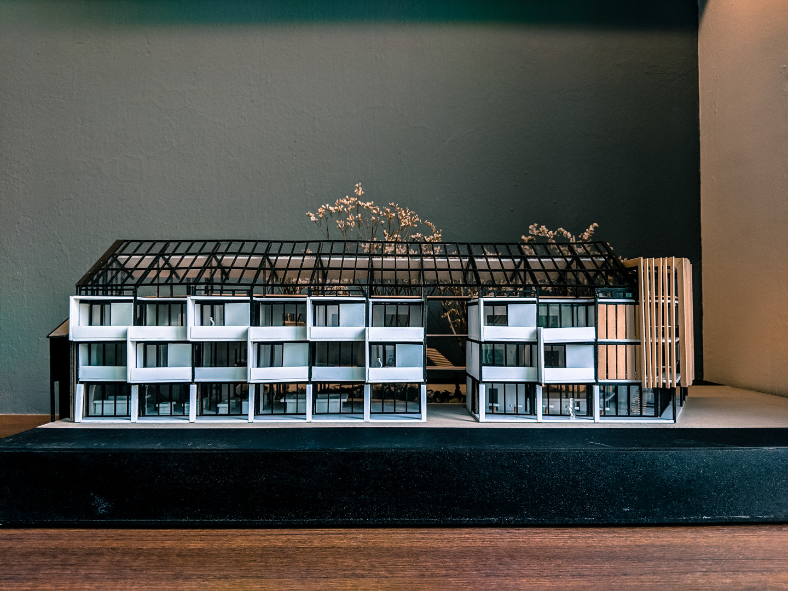

Ruins are everywhere. They exist as inescapable physical presences in the urban environment. Ruins are also the absences we feel but do not see. Cities rise from the ruin of natural landscapes, and from the successive waves of destruction and rebuilding. The ruins of Little India hide in plain sight behind each and every row of shophouses, painstakingly preserved under the direction of the 125-page URA manifesto titled Coservation Guidelines.
The carefully restored facades, an attempt to keep these ruins relevant, ironically distance them from reality. Demographic enclaves exist within imagined demarcations drawn by the prevalent land use occupying these shophouses. These fissures are reinforced by heavy police presence and divisive fences. Residents, Migrant workers and tourists sit together yet apart paradoxically.
Urban waste populates the site, each corner one turns, every back alley, interconnected. This waste is made up from single-use plastics routinely thrown from each store and fresh produce from the many grocers within the site. Cardboard and broken furniture further add to the canvas of waste and the unwanted. While the HDBS estates are governed by strict greening policies, much of the private land Little India has sacrificed green space for tightly packed real estate. Green allotments stand out like token tributes to a red and brown mish-mash of the busy urban fabric.
What is the Work-away Model?
The work-away model allows each backpacker to serve in a variety of programmes in exchange for food and lodging.These include:
1. Textile, furniture and electronics repair
2. Cafe and common goods grocer
3. Urban farming and composting
These different programmes seamlessly integrate across various systems housed within a cohesive, sustainable and open architectural design. The schematic diagram on the side illustrates the how the products and process of each programme feeds into one another,
Design Principles

Living Spaces Sectional Perspective

Rooftop Edibles Garden
